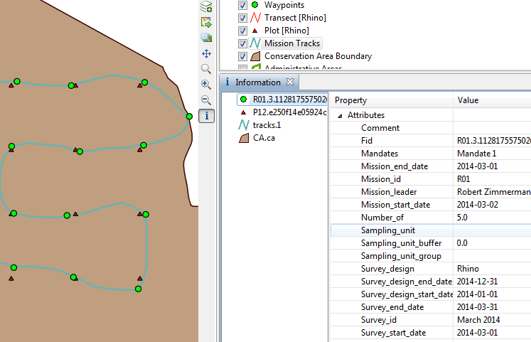

As consultas de pesquisa são usadas para exibir detalhes das observações relacionadas à pesquisa. As consultas de incidentes limitam os resultados aos pontos de localização e suas propriedades associadas, incluindo unidades de amostragem, propriedades de missão e pesquisa. Detalhes de observação não estão incluídos.
Somente registros de ponto de localização/incidente que correspondem aos filtros selecionados são exibidos. Não é feito nenhum resumo (ou seja, sem totais, quantidades, agregações, etc.). A tabela resultante inclui todos os detalhes da pesquisa, missão e unidade de amostragem. Os resultados podem ser visualizados em uma tabela ou em um mapa. O mapa inclui uma camada de observação, uma camada de pista de missão e camadas de unidade de amostragem.
 |
Exemplo Consulta de Incidente de Pesquisa |
Incidente x Observação
Uma observação é um único item observado e consiste em exatamente uma categoria do modelo de dados e todos os seus atributos associados. Um incidente é um conjunto de observações que ocorrem no mesmo ponto e na mesma hora (um ponto de localização).
Filtros de Incidente x de Observação
As consultas de incidente suportam filtros de incidentes e filtros de observação. Os filtros de observação consideram apenas as observações individuais ao filtrar dados. Como resultado, você não pode consultar categorias. Os filtros de incidentes analisam todas as observações em um determinado incidente ao filtrar dados. Isso permite que você consulte categorias.
Os filtros de observação mostrarão resultados apenas de incidentes nos quais uma observação combina com o filtro dado. Filtros de incidentes mostrarão todos os pontos de localização nos quais o conjunto de observações combina com o filtro.